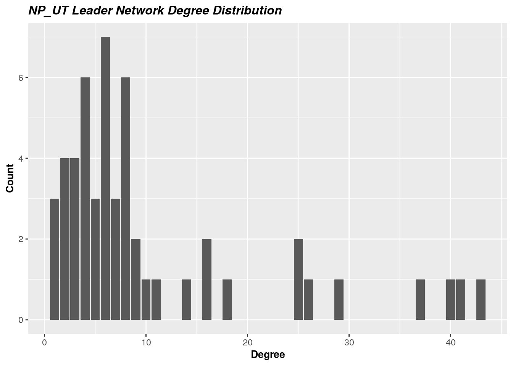
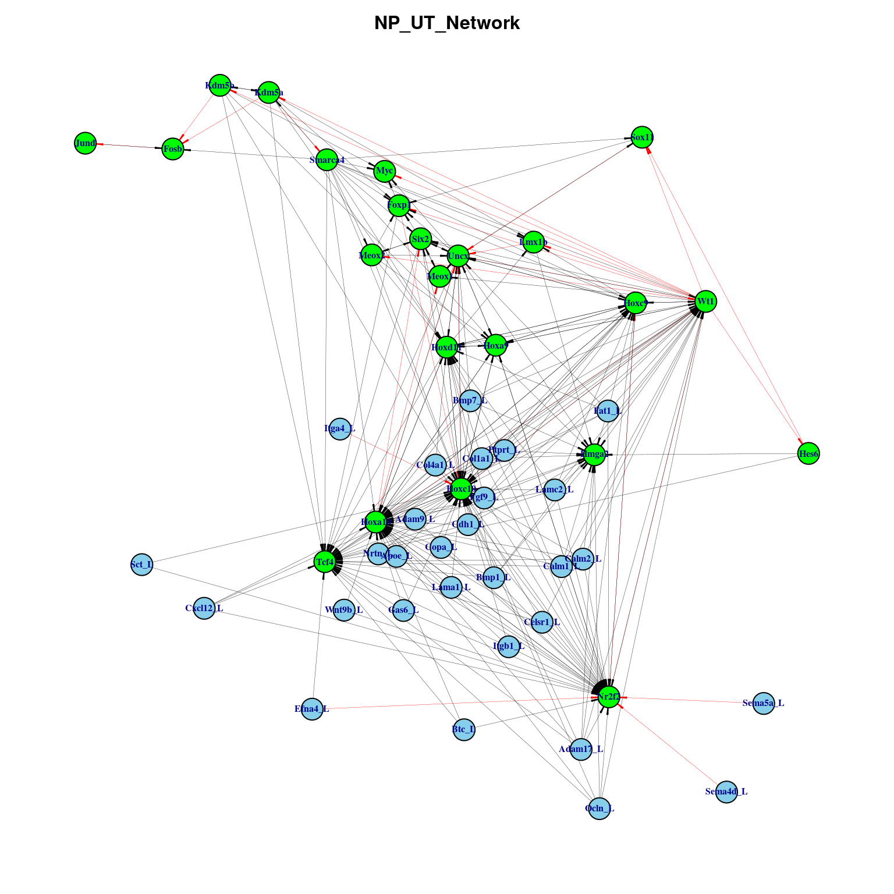
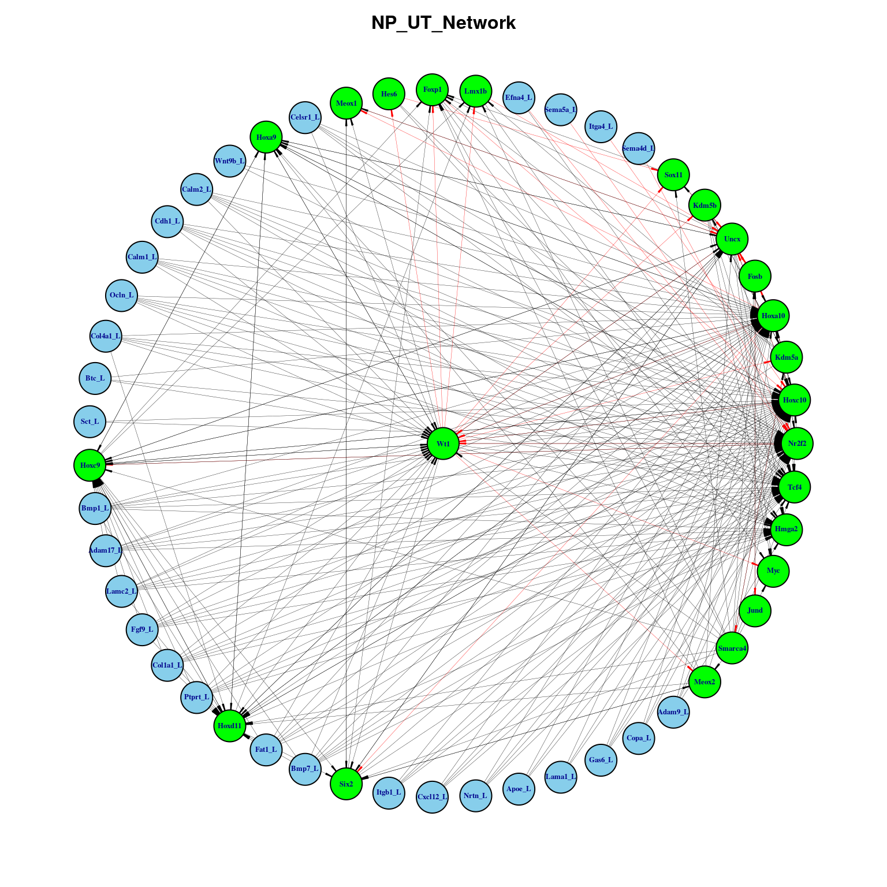
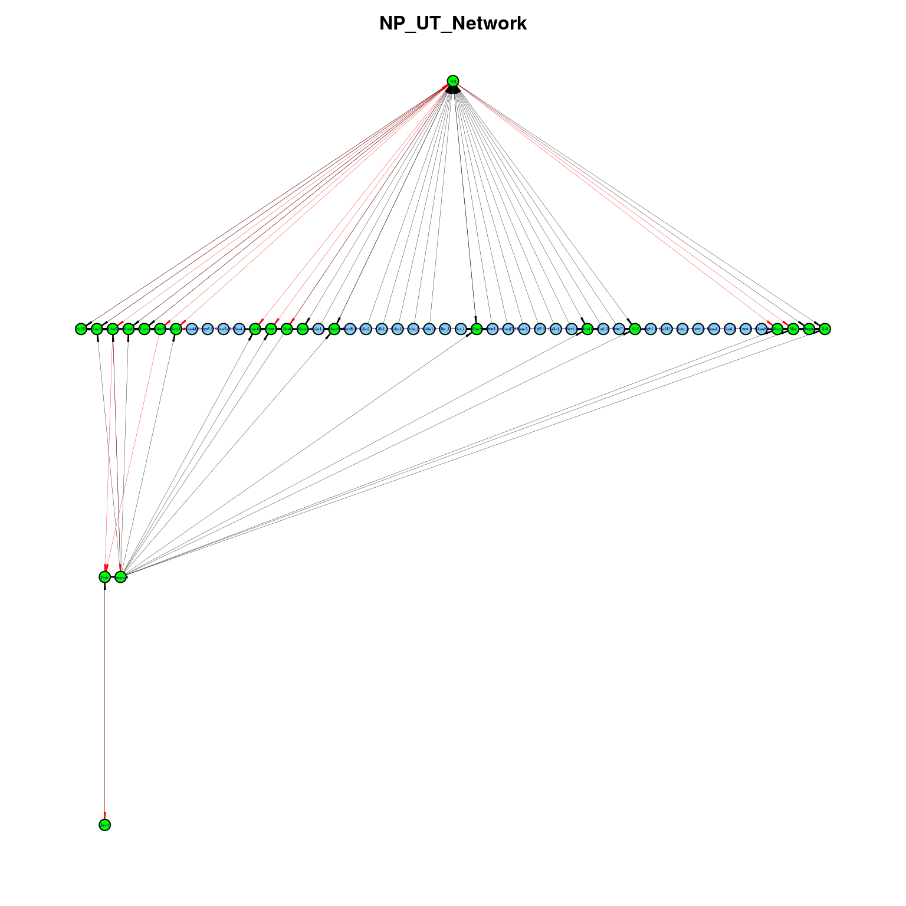

Last updated: 2022-08-08
Checks: 7 0
Knit directory: myproject/
This reproducible R Markdown analysis was created with workflowr (version 1.7.0). The Checks tab describes the reproducibility checks that were applied when the results were created. The Past versions tab lists the development history.
Great! Since the R Markdown file has been committed to the Git repository, you know the exact version of the code that produced these results.
Great job! The global environment was empty. Objects defined in the global environment can affect the analysis in your R Markdown file in unknown ways. For reproduciblity it’s best to always run the code in an empty environment.
The command set.seed(20220803) was run prior to running
the code in the R Markdown file. Setting a seed ensures that any results
that rely on randomness, e.g. subsampling or permutations, are
reproducible.
Great job! Recording the operating system, R version, and package versions is critical for reproducibility.
Nice! There were no cached chunks for this analysis, so you can be confident that you successfully produced the results during this run.
Great job! Using relative paths to the files within your workflowr project makes it easier to run your code on other machines.
Great! You are using Git for version control. Tracking code development and connecting the code version to the results is critical for reproducibility.
The results in this page were generated with repository version 3b2b40f. See the Past versions tab to see a history of the changes made to the R Markdown and HTML files.
Note that you need to be careful to ensure that all relevant files for
the analysis have been committed to Git prior to generating the results
(you can use wflow_publish or
wflow_git_commit). workflowr only checks the R Markdown
file, but you know if there are other scripts or data files that it
depends on. Below is the status of the Git repository when the results
were generated:
working directory clean
Note that any generated files, e.g. HTML, png, CSS, etc., are not included in this status report because it is ok for generated content to have uncommitted changes.
These are the previous versions of the repository in which changes were
made to the R Markdown
(analysis/Network_Analysis_NP_Leaders.Rmd) and HTML
(docs/Network_Analysis_NP_Leaders.html) files. If you’ve
configured a remote Git repository (see ?wflow_git_remote),
click on the hyperlinks in the table below to view the files as they
were in that past version.
| File | Version | Author | Date | Message |
|---|---|---|---|---|
| Rmd | 3b2b40f | mehranpiran | 2022-08-08 | Network analysis files were added |
\(~\)
\(~\)
library(igraph)
library(tidyverse)
library(ggplot2)
library(DT)
NP_UT_lr <- readRDS("NP_UT_lr_edgelist.rds")
NP_UT_lt <- readRDS("NP_UT_lt_edgelist.rds")
regreg_edgelist <- readRDS("RegReg_edgelist.rds")
regulons <- readRDS("NP_Regulons.rds")
colnames(NP_UT_lr) <- c("Ligands" , "Targets")
lrt <- rbind(NP_UT_lr, NP_UT_lt)\(~\)
\(~\)
regreg_edgelist[,1] %>% unique() [1] "Six2_61g" "Hoxa10_68g" "Uncx_127g.ex" "Wt1_1290g.ex"
[5] "Kdm5b_962g.ex" "Hes6_289g.ex" "Lmx1b_70g.ex" "Meox1_16g"
[9] "Meox2_88g.ex" "Hoxd11_68g.ex" "Smarca4_4515g.ex" "Hoxc9_230g.ex"
[13] "Hoxc10_52g" "Nr2f2_54g.ex" "Hoxa9_93g.ex" "Foxp1_109g"
[17] "Sox11_62g" "Kdm5a_2734g.ex" "Fosb_17g" "Jund_18g" edgelist <- matrix( 0 , dim(regreg_edgelist)[1] , 2) %>% as.data.frame()
for(i in 1:2){
edgelist[,i] <- regreg_edgelist[,i] %>% strsplit(split = "_") %>% lapply(function(x) x[1]) %>% unlist()
}
colnames(edgelist) <- c("From" , "To")\(~\)
\(~\)
common_genes <- c(intersect(lrt$Ligands , edgelist$From) , intersect(lrt$Ligands , edgelist$To) ,
intersect(lrt$Targets , edgelist$From) , intersect(lrt$Targets , edgelist$To)) %>% unique()
common_genes[1] "Nr2f2" "Hoxa10" "Hoxc10" "Wt1" "Hoxc9" "Hoxd11" "Uncx" "Hmga2"
[9] "Tcf4" regulon_names <- names(regulons) %>% strsplit(split = " ") %>% lapply(function(x) x[1]) %>% unlist() %>%
strsplit(split = "_") %>% lapply(function(x) x[1]) %>% unlist()
intersect(regulon_names , common_genes)[1] "Hmga2" "Hoxa10" "Hoxc10" "Uncx" "Hoxd11" "Wt1" "Tcf4" "Nr2f2"
[9] "Hoxc9" genesTokeep <- unique(c(common_genes , regulon_names))\(~\)
\(~\)
if(all(unique(edgelist$From) %in% unique(edgelist$To))){
reg_core_edgelist <- edgelist[ edgelist$To %in% genesTokeep , ]
}else{
n <- unique(edgelist$From)[!unique(edgelist$From) %in% unique(edgelist$To)]
idx <- edgelist$From %in% n & edgelist$To %in% genesTokeep
reg_core_edgelist <- edgelist[ edgelist$To %in% genesTokeep | idx , ]
}
rownames(reg_core_edgelist) <- 1:length(reg_core_edgelist[,1])
dim(reg_core_edgelist)[1] 132 2\(~\)
\(~\)
lrt_core <- lrt[lrt$Ligands %in% genesTokeep | lrt$Targets %in% genesTokeep , ]
dim(lrt_core)[1] 139 2head(lrt_core) Ligands Targets
157 Sema4d Nr2f2
163 Adam9 Hoxa10
164 Adam9 Hoxc10
166 Adam9 Nr2f2
174 Adam9 Hmga2
179 Adam17 Hoxa10rownames(lrt_core) <- 1:dim(lrt_core)[1]
colnames(lrt_core) <- c("From" , "To")
edgelist <- rbind(lrt_core , reg_core_edgelist)
if(any(duplicated(edgelist))){
edgelist <- edgelist[ !duplicated(edgelist) , ]
}
dim(edgelist)[1] 271 2head(edgelist) From To
1 Sema4d Nr2f2
2 Adam9 Hoxa10
3 Adam9 Hoxc10
4 Adam9 Nr2f2
5 Adam9 Hmga2
6 Adam17 Hoxa10\(~\)
\(~\)
c(lrt$Ligands,lrt$Targets) %>% unique() %>% length[1] 163c(regreg_edgelist$From,regreg_edgelist$To) %>% unique() %>% length[1] 0c(edgelist$From,edgelist$To) %>% unique() %>% length[1] 52c(lrt_core$From , lrt_core$To) %>% unique() %>% length[1] 38\(~\)
\(~\)
\(~\)
net = graph.data.frame(edgelist , directed = T)
is.connected(net)[1] TRUEnetIGRAPH 2f53619 DN-- 52 271 --
+ attr: name (v/c)
+ edges from 2f53619 (vertex names):
[1] Sema4d->Nr2f2 Adam9 ->Hoxa10 Adam9 ->Hoxc10 Adam9 ->Nr2f2 Adam9 ->Hmga2
[6] Adam17->Hoxa10 Adam17->Hoxc10 Adam17->Nr2f2 Adam17->Tcf4 Adam17->Wt1
[11] Adam17->Hoxc9 Adam17->Hmga2 Lamc2 ->Hoxa10 Lamc2 ->Hoxc10 Lamc2 ->Nr2f2
[16] Lamc2 ->Tcf4 Lamc2 ->Wt1 Lamc2 ->Hoxc9 Lamc2 ->Hoxd11 Lamc2 ->Hmga2
[21] Itgb1 ->Hoxa10 Itgb1 ->Hoxc10 Itgb1 ->Nr2f2 Itgb1 ->Tcf4 Cxcl12->Hoxa10
[26] Cxcl12->Hoxc10 Cxcl12->Nr2f2 Cxcl12->Tcf4 Efna4 ->Nr2f2 Efna4 ->Tcf4
[31] Fgf9 ->Hoxa10 Fgf9 ->Hoxc10 Fgf9 ->Nr2f2 Fgf9 ->Tcf4 Fgf9 ->Wt1
[36] Fgf9 ->Hoxc9 Fgf9 ->Hoxd11 Fgf9 ->Hmga2 Wnt9b ->Hoxa10 Wnt9b ->Nr2f2
+ ... omitted several edges\(~\)
\(~\)
n <- names(V(net))[names(V(net)) %in% lrt$Ligands]
V(net)$name[which(names(V(net)) %in% lrt$Ligands)] <- paste0(n,"_L")
edge_density(net, loops=F)[1] 0.1021872*ecount(as.undirected(net))/(vcount(as.undirected(net))*(vcount(as.undirected(net))-1))[1] 0.1802413diameter(net, directed=T)[1] 6diam <- get_diameter(net, directed=T)
diam+ 7/52 vertices, named, from 2f53619:
[1] Hes6 Sox11 Uncx Wt1 Kdm5b Fosb Jund \(~\)
\(~\)
\(~\)
degree <- degree(net,mode = "all")
degree <- sort(degree , decreasing = T)
degree <- as.data.frame(degree)
dim(degree)[1] 52 1head(degree) degree
Hoxc10 43
Hoxa10 41
Wt1 40
Nr2f2 37
Tcf4 29
Uncx 26ggplot(degree , mapping = aes(x = degree)) + geom_bar() +
ggtitle(label = "NP_UT Leader Network Degree Distribution") + xlab("Degree") + ylab("Count") +
theme(
plot.title = element_text(color="black", size=12, face="bold.italic"),
axis.title.x = element_text(color="black", size=10, face="bold"),
axis.title.y = element_text(color="black", size=10, face="bold")
)
\(~\)
## closenes
closenes = closeness(net, mode="all", normalized=T)
closenes = round(as.data.frame(sort(closenes , decreasing = T) ) , 4)
dim(closenes)[1] 52 1head(closenes) sort(closenes, decreasing = T)
Hoxc10 0.7727
Hoxa10 0.7391
Wt1 0.7391
Nr2f2 0.7083
Tcf4 0.6623
Hoxd11 0.6000centr_clo(net, mode="all", normalized=T)$centralization[1] 0.5276225## Betweenness
b = betweenness(net, directed=T, weights=NA)
b = round(as.data.frame(sort(b , decreasing = T)) , 4)
dim(b)[1] 52 1head(b) sort(b, decreasing = T)
Wt1 433.9579
Hoxc10 141.5837
Hoxa10 129.7254
Nr2f2 126.3242
Uncx 123.8996
Kdm5a 93.1190## EdgeBetweenness
EdgeBetweenness = data.frame(as_edgelist(net) , edge_betweenness(net , directed=T , weights=NA))
colnames(EdgeBetweenness) = c("Gene1" , "Gene2" , "Edge_Betweenness")
EdgeBetweenness <- EdgeBetweenness %>% arrange(desc(Edge_Betweenness))
dim(EdgeBetweenness)[1] 271 3head(EdgeBetweenness) Gene1 Gene2 Edge_Betweenness
1 Wt1 Kdm5a 132.00000
2 Nr2f2 Wt1 97.85675
3 Wt1 Kdm5b 88.50000
4 Hoxc10 Wt1 75.94405
5 Kdm5a Smarca4 54.55952
6 Hoxa10 Wt1 48.88175## Distances
mean_distance(net, directed=T)[1] 2.181221dis = distances(net)
dis = as.data.frame(round(sort(apply(dis,1,mean) , decreasing = F) , 4))
dim(dis)[1] 52 1head(dis) round(sort(apply(dis, 1, mean), decreasing = F), 4)
Hoxc10 1.2692
Hoxa10 1.3269
Wt1 1.3269
Nr2f2 1.3846
Tcf4 1.4808
Hoxd11 1.6346## Eigen_vector
eig <- eigen_centrality(net , directed = T , scale = TRUE , weights = NULL)
eig <- round(as.data.frame(sort(eig$vector , decreasing = T)) , 4)
dim(eig)[1] 52 1head(eig) sort(eig$vector, decreasing = T)
Hoxc10 1.0000
Uncx 0.9920
Hoxa9 0.8300
Hoxa10 0.8044
Hoxc9 0.8044
Hoxd11 0.7883\(~\)
\(~\)
colnames(dis) <- "Cent"
colnames(b) <- "Cent"
colnames(closenes) <- "Cent"
colnames(degree) <- "Cent"
colnames(eig) <- "Cent"
dis$genes <- rownames(dis)
b$genes <- rownames(b)
closenes$genes <- rownames(closenes)
degree$genes <- rownames(degree)
eig$genes <- rownames(eig)
centers <- merge(degree , b , by = "genes") %>% merge(eig , by = "genes") %>% merge(closenes , by = "genes") %>% merge(dis , by = "genes")Warning in merge.data.frame(., closenes, by = "genes"): column names 'Cent.x',
'Cent.y' are duplicated in the resultWarning in merge.data.frame(., dis, by = "genes"): column names 'Cent.x',
'Cent.y' are duplicated in the resultcolnames(centers) <- c("Genes" , "Degree" , "Betweenness" , "Eigen_vector", "Closeness" , "Distance" )
centers <- centers %>% arrange(desc(Degree))
rownames(centers) <- centers$Genes
centers <- centers[,-1]\(~\)
\(~\)
datatable(centers)\(~\)
datatable(EdgeBetweenness)\(~\)
\(~\)
net <- graph_from_data_frame(EdgeBetweenness[,1:2] , directed = T)
E(net)$weight <- EdgeBetweenness[,3]
n <- names(V(net))[names(V(net)) %in% lrt$Ligands]
V(net)$name[which(names(V(net)) %in% lrt$Ligands)] <- paste0(n,"_L")
ecol <- rep("black", ecount(net))
vcol <- rep("sky blue", vcount(net))
ewidth <- rep(0.2, ecount(net))
earrow <- rep(0.3, ecount(net))
e.arrow.w <- rep(0.2, ecount(net))
qs <- quantile(EdgeBetweenness[EdgeBetweenness$Edge_Betweenness > 0 , 3] , probs = seq(0, 1, by= 0.1))
qs 0% 10% 20% 30% 40% 50% 60%
1.000000 1.000000 1.333333 1.926190 2.450000 3.259524 5.322222
70% 80% 90% 100%
8.242857 11.950000 18.985714 132.000000 ecol[E(net)$weight > as.integer(qs[10])] <- 'red'
qs1 <- quantile(centers[centers$Degree > 1 , 1] , probs = seq(0, 1, by= 0.1))
qs1 0% 10% 20% 30% 40% 50% 60% 70% 80% 90% 100%
2.0 3.0 4.0 5.0 6.0 7.0 8.0 9.0 16.0 26.6 43.0 qs2 <- quantile(centers$Betweenness[centers$Betweenness > 0] , probs = seq(0, 1, by= 0.1))
qs2 0% 10% 20% 30% 40% 50% 60% 70%
1.02060 3.90046 8.92474 12.86442 20.17000 35.62220 46.23332 99.27512
80% 90% 100%
125.83928 134.46872 433.95790 qs3 <- quantile(centers$Eigen_vector[centers$Eigen_vector > 0] , probs = seq(0, 1, by= 0.1))
qs3 0% 10% 20% 30% 40% 50% 60% 70% 80% 90%
0.00540 0.05054 0.11978 0.23800 0.33920 0.45250 0.57388 0.71546 0.79796 0.82488
100%
1.00000 idx = centers$Degree >= qs1[9] | centers$Betweenness > as.integer(qs2[3]) | centers$Eigen_vector > qs3[9]
idx = which(names(V(net)) %in% rownames(centers %>% filter(Degree >= qs1[9] | Betweenness > as.integer(qs2[3]) | Eigen_vector > qs3[9])))
idx1 = which(names(V(net)) %in% regulon_names)
vcol[idx] <- "red"
vcol[idx1] <- "green"
par(mar=c(0,0,0,0)+2)
plot(net , edge.color=ecol , vertex.color=vcol , vertex.size = 6, vertex.label.dist=0, vertex.label.font = 2 ,
vertex.label.cex=0.5, vertex.label.col = "dark blue" , edge.arrow.width = e.arrow.w ,
edge.width = ewidth , edge.arrow.size = earrow , layout = layout_with_dh)
title("NP_UT_Network",cex.main=1,col.main="Black")
plot(net , edge.color=ecol , vertex.color=vcol , vertex.size = 9, vertex.label.dist=0, vertex.label.font = 2 ,
vertex.label.cex=0.4, vertex.label.col = "dark blue" , edge.arrow.width = e.arrow.w ,
edge.width = ewidth , edge.arrow.size = earrow , layout = layout_as_star)
title("NP_UT_Network",cex.main=1,col.main="Black")
earrow <- rep(0.3, ecount(net))
plot(net , edge.color=ecol , vertex.color=vcol , vertex.size = 3, vertex.label.dist=0, vertex.label.font = 2 ,
vertex.label.cex=0.2, vertex.label.col = "dark blue" , edge.arrow.width = e.arrow.w ,
edge.width = ewidth , edge.arrow.size = earrow , layout = layout_as_tree)Warning in v(graph): At structural_properties.c:3464 :graph contains a cycle,
partial result is returnedtitle("NP_UT_Network" , cex.main=1 , col.main="Black")
\(~\)
\(~\)
sessionInfo()R version 4.0.2 (2020-06-22)
Platform: x86_64-pc-linux-gnu (64-bit)
Running under: Ubuntu 18.04.6 LTS
Matrix products: default
BLAS: /mnt/software/apps/R/4.0.2/lib/R/lib/libRblas.so
LAPACK: /mnt/software/apps/R/4.0.2/lib/R/lib/libRlapack.so
locale:
[1] LC_CTYPE=en_AU.UTF-8 LC_NUMERIC=C
[3] LC_TIME=en_AU.UTF-8 LC_COLLATE=en_AU.UTF-8
[5] LC_MONETARY=en_AU.UTF-8 LC_MESSAGES=en_AU.UTF-8
[7] LC_PAPER=en_AU.UTF-8 LC_NAME=C
[9] LC_ADDRESS=C LC_TELEPHONE=C
[11] LC_MEASUREMENT=en_AU.UTF-8 LC_IDENTIFICATION=C
attached base packages:
[1] stats graphics grDevices utils datasets methods base
other attached packages:
[1] DT_0.20 forcats_0.5.1 stringr_1.4.0 dplyr_1.0.6
[5] purrr_0.3.4 readr_2.1.0 tidyr_1.1.4 tibble_3.1.1
[9] ggplot2_3.3.5 tidyverse_1.3.1 igraph_1.2.9 workflowr_1.7.0
loaded via a namespace (and not attached):
[1] Rcpp_1.0.7 lubridate_1.8.0 getPass_0.2-2 ps_1.6.0
[5] assertthat_0.2.1 rprojroot_2.0.2 digest_0.6.29 utf8_1.2.1
[9] R6_2.5.1 cellranger_1.1.0 backports_1.4.0 reprex_2.0.1
[13] evaluate_0.14 highr_0.9 httr_1.4.2 pillar_1.6.0
[17] rlang_0.4.11 readxl_1.3.1 rstudioapi_0.13 whisker_0.4
[21] callr_3.7.0 jquerylib_0.1.4 rmarkdown_2.11 labeling_0.4.2
[25] htmlwidgets_1.5.4 munsell_0.5.0 broom_0.7.12 compiler_4.0.2
[29] httpuv_1.6.0 modelr_0.1.8 xfun_0.23 pkgconfig_2.0.3
[33] htmltools_0.5.2 tidyselect_1.1.1 fansi_0.5.0 withr_2.4.3
[37] crayon_1.4.2 tzdb_0.2.0 dbplyr_2.1.1 later_1.2.0
[41] grid_4.0.2 jsonlite_1.7.3 gtable_0.3.0 lifecycle_1.0.1
[45] DBI_1.1.2 git2r_0.29.0 magrittr_2.0.2 scales_1.1.1
[49] cli_3.1.0 stringi_1.6.2 farver_2.1.0 fs_1.5.2
[53] promises_1.2.0.1 xml2_1.3.3 bslib_0.3.1 ellipsis_0.3.2
[57] generics_0.1.2 vctrs_0.3.7 tools_4.0.2 glue_1.5.0
[61] crosstalk_1.2.0 hms_1.0.0 processx_3.5.2 fastmap_1.1.0
[65] yaml_2.2.2 colorspace_2.0-1 rvest_1.0.2 knitr_1.36
[69] haven_2.4.3 sass_0.4.0